WS26/27 AM1: Quantitative Linguistik: Eine Einführung in die Statistik
Sitzung 5: Lineare Regression
eva.scheel-huber@uni-koeln.de
18. 11. 2026
Übersicht
- Rückblick und Aufgabenblatt 3
- Lineare Regression
Rückblick
Normalisierungsmaße
z-Werte (1.1 im AB3)
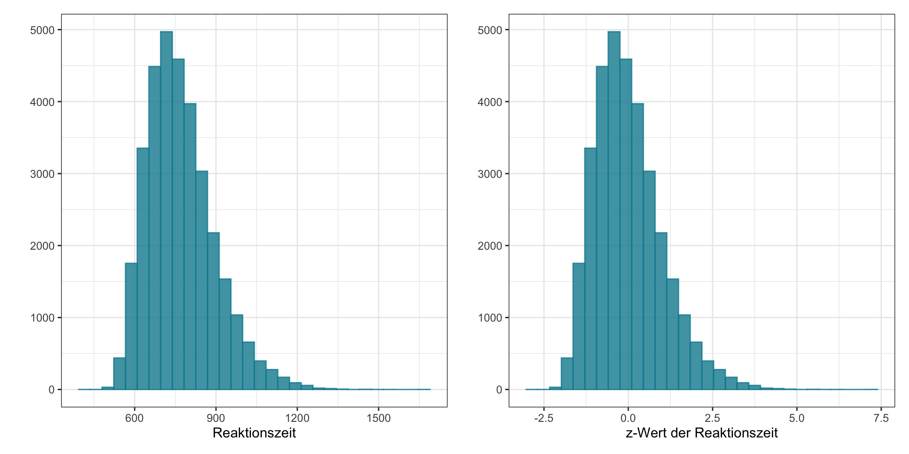
z-Werte (1.1 im AB3)
Ohne Extremwerte (z.B. behalte nur Werte mit \(\text{z_score} < 2.5\) und \(\text{z_score} > 2.5\)):
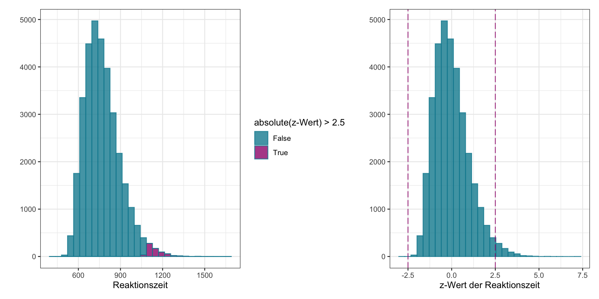
Wahrscheinlichkeitsberechnungen (1.2 im AB3)
Berechnungen mit pnorm()
[1] 0.2011239Wahrscheinlichkeitsberechnungen (1.2 im AB3)
Berechnungen mit dnorm() (entschuldigt den Fehler!)
Wahrscheinlichkeitsberechnungen (1.2 im AB3)
Berechnungen mit qnorm(): 95%-Konfidenzintervall
[1] 526.0256[1] 1013.718Wie kann man das noch berechnen?
Wahrscheinlichkeitsberechnungen (1.2 im AB3)
Berechnungen mit qnorm(): 95%-Konfidenzintervall
Wir wissen, dass 95% der Daten zwischen \(\bar{x}\pm (1,96 * sd)\) liegen:
Von Univariater zu multivariater Statistik
- Univariat: Was ist die allgemeine Reaktionszeit beim Erkennen Wörter von englischsprechenden Personen?
- Multivariat: Wie beeinflusst die Worthäufigkeit die Reaktionszeit beim Erkennen von Wörtern?
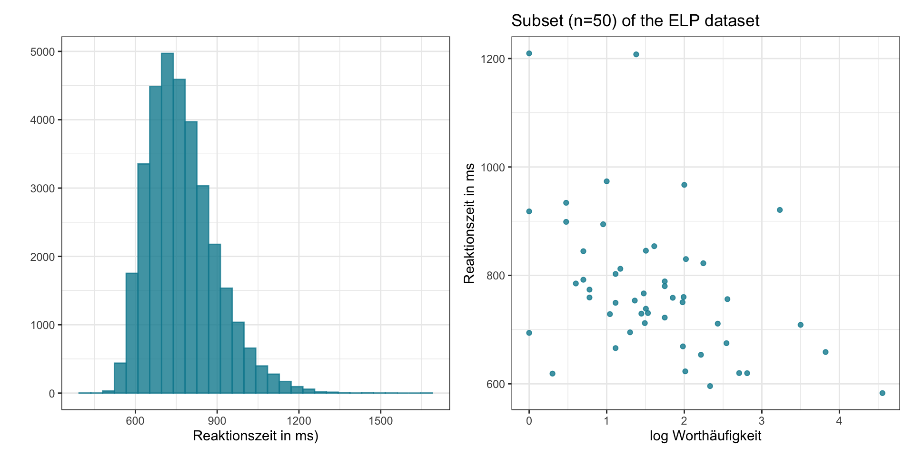
von The English Lexicon Project (Balota et al. 2007)
Statistische Modelle
Lineare Regression
Die Linie ist unser statistisches Modell
- erfasst den Prozess der Reaktionszeit numerisch
- erlaubt es Vorhersagen über mögliche Ereignisse zu machen, die nicht in unserer Stichprobe sind
- erlaubt es Hypothesen zu testen
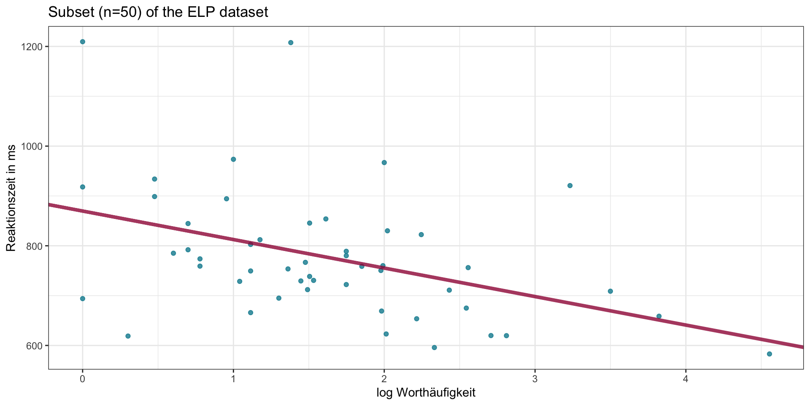
Lineare Regression
Beispiel zum Vorhersagen neuer Datenpunkte:
Wie schnell wird das Wort “windmill”, wessen Worthäufigkeit 65 beträgt, erkannt?
- log Häufigkeit berechnen: \(log_{10}(65) = 1.813\)
- auf dem Graphen y-Wert ablesen: wie viele ms beträgt y wahrscheinlich ungefähr?

Statisische Modelle
Welche Arten von Statistichen Modellen werden wir in diesem Kurs kennenlernen?
In diesem Kurs:
- parametrische Modelle
- Annahme, dass die Daten von einer Wahrscheinlichkeitsverteilung mit bestimmten Parametern erzeugt wurden (z.B. Normalverteilung)
- lineare (und logistische) Regression
- t-Tests (Inferentielle Statistik)
Nicht in diesem Kurs:
- nicht-parametrische Modelle (z.B. Random Forests)
- Chi-Quadrat-Test
- Varianzanalyse (ANOVA)
Statisische Modelle
In diesem Kurs
- “frequentistische” Ansätze für die Inferentielle Statistik
- p-Werte
Nicht in diesem Kurs:
- Bayessche Statistik
Regression
- Ziel der Regressionsanalyse ist die Beziehung zwischen einer Antwortvariable (response variable) und einer Prädiktorvariable (predictor variable) zu modellieren
- “regressing y on x” oder “modeling y as a function of x” (Winter 2020: 69)
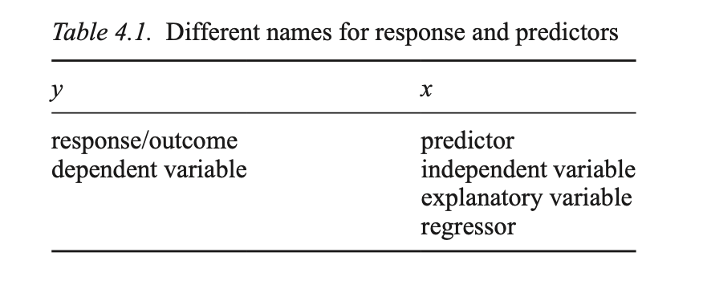
(S. 70 Winter 2020)
Was für mögliche Antwort- und Prädiktorvariablen in gewissen linguistischen Fragestellungen kommen euch in den Sinn?
Kausalität
- Regression wird anhand der angenommenen Kausalität spezifiziert
- z.B. Worhäufigkeit = Prädiktorvariable (x) und Reaktionszeit = Antwortvariable (y)
- Korrelation = Kausalität?
Kausalität
Korrelation = Kausalität
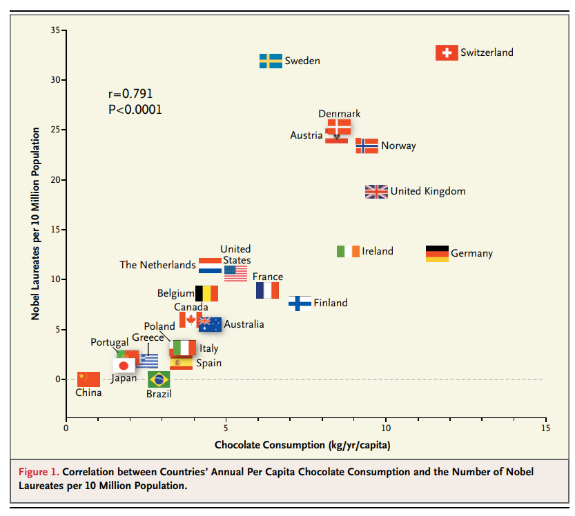
Messerlis Fazit: “Chocolate consumption enhances cognitive function, which is a sine qua non for winning the Nobel Prize, and it closely correlates with the number of Nobel laureates in each country. It remains to be determined whether the consumption of chocolate is the underlying mechanism for the observed association with improved cognitive function.” (Messerli 2012)
Lineare Regression
Wie unterscheiden sich jeweils die roten und türkisen Linien?

Lineare Regression
Wie unterscheiden sich jeweils die roten und türkisen Linien?
- links: gleicher \(y\)-Achsenabschnitt (Intercept), andere Steigung (slope)
- rechts: anderer \(y\)-Achsenabschnitt (Intercept), gleiche Steigung (slope)
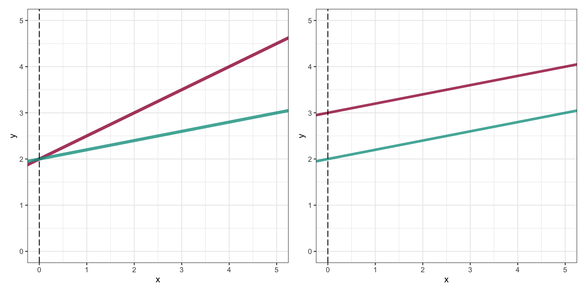
Lineare Regression
Die beiden Parameter/Koeffizienten, die ein Lineares Regressionsmodell definieren:
- y-Achsenabschnitt (intercept): der Punkt, an dem die Linie die y-Achse schneidet
- Steigung (slope) \(b_{1} = \frac{\Delta y}{\Delta x}\)
Regressionskoeffizienten
y-Achsenabschnitt und die Steigung sind die Koeffizienten des Modells und werden oft \(b_{0}\) und \(b_{1}\) genannt.
\(y = b_{0} + b_{1} * x\)
Was bedeuten der y-Achsenabschnitt und die Steigung?
Regressionskoeffizienten
Wenn \(y = b_{0}\):
- ist \(b_{0}\) der Mittelwert (der Mean).
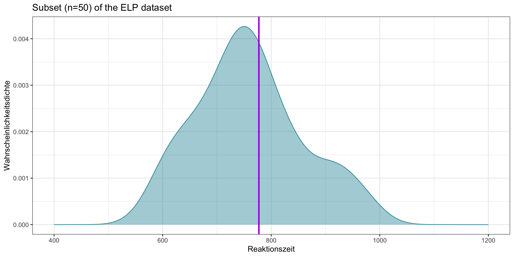
Regressionskoeffizienten
Wenn \(y = b_{0} + b_{1} * x\), also inklusive der Prädiktorvariable Log10Freq:
- ist \(b_{0}\) der Mittelwert (der Mean) der Wenn die Worthäufigkeit (Log10Freq) 0 beträgt.
- ! \(b_{0}\) ändert sich also wenn eine Prädiktorvariable hinzugefügt wird.
- und \(b_{1}\) (Steigung) zeigt den zusätzlichen Anstieg pro einer Einheit Log10Freq
- d.h.: pro einer Log10Freq sinkt die Reaktionszeit um -57.25.
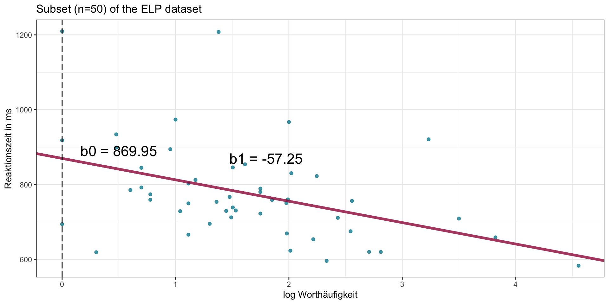
Falls wir den \(y\)-Achsenabschnitt \(b_{0}\) gerne besser interpretieren würden, könnten wir die Worthäufigkeit in z-Werte umwandeln. Wieso würde das der Interpretation dienen?
Vorhersagen neuer Datenpunkte
Wenn wir \(b_{0}\) und \(b_{1}\) kennen, können wir die vorhergesagte Reaktionszeit von “windmills” direkt ausrechnen. In anderen Worten: von einem angepaßten Modells (fitted model) die angepassten Werte (fitted values) berechnen
Vorhersagen neuer Datenpunkte
Wenn wir \(b_{0}\) und \(b_{1}\) kennen, können wir die vorhergesagte Reaktionszeit von “windmills” direkt ausrechnen. In anderen Worten: von einem angepaßten Modells (fitted model) die angepassten Werte (fitted values) berechnen
in R benutzen wir die Funktion lm() für simple Lineare Regressionsmodelle:
Call:
lm(formula = RT ~ 1 + Log10Freq, data = sample)
Residuals:
Min 1Q Median 3Q Max
-233.85 -64.06 -19.19 45.89 416.77
Coefficients:
Estimate Std. Error t value Pr(>|t|)
(Intercept) 869.95 33.32 26.11 < 2e-16 ***
Log10Freq -57.25 17.72 -3.23 0.00224 **
---
Signif. codes: 0 '***' 0.001 '**' 0.01 '*' 0.05 '.' 0.1 ' ' 1
Residual standard error: 119.7 on 48 degrees of freedom
Multiple R-squared: 0.1786, Adjusted R-squared: 0.1615
F-statistic: 10.43 on 1 and 48 DF, p-value: 0.002235der Modellzusammenfassung entnehmen wir den y-Achsenschnittpunkt (\(b_{0}\)) und die Steigung (\(b_{1}\))
- Wir kennen die Häufigkeit von “windmills”: 65, auf der Log-Skala: (\(log_{10}(65)) = 1.81)\)
- \(b_{0}\) und \(b_{1}\) entnehmen wir dem gefitteten Modell
Also: \(736.23 = 869.95 + -57.25 * 1.81\)
Residuen
- Fast keiner der Datenpunkte liegt perfekt auf der Regressionslinie
- Residuen (residuals) quantifizieren wie weit ein Datenpunkt von der Linie, d.h. den angepassten Werten, entfernt ist
- Demnach gilt:
- beobachtete Daten = angepasste Werte + Residuen
- Residuen = beobachtete Daten - angepasste Werte
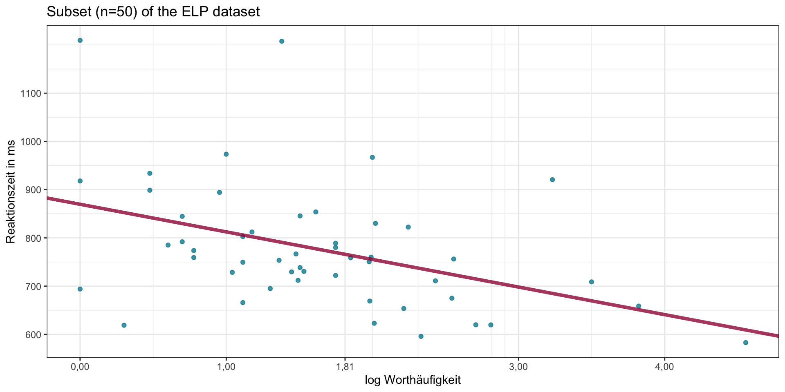
Residuen
Wir müssen unsere Formel also durch den Fehlerterm (e) ergänzen:
\(y = b_{0} + b_{1} * x + e\)
Residuen
Wir müssen unsere Formel also durch den Fehlerterm (e) ergänzen:
\(y = b_{0} + b_{1} * x + e\)
Das kennt ihr bereits:
- Die Wahrscheinlichkeitsdichteverteilung rechts ist nichts anderes als \(y = b_{0} + e\)
- Unser Mittelwert ist 777.24, aber daneben befinden sich ganz viele Datenpunkte die von diesem Mittelwert abweichen
- ohne \(e\) wäre unsere Gleichung also falsch
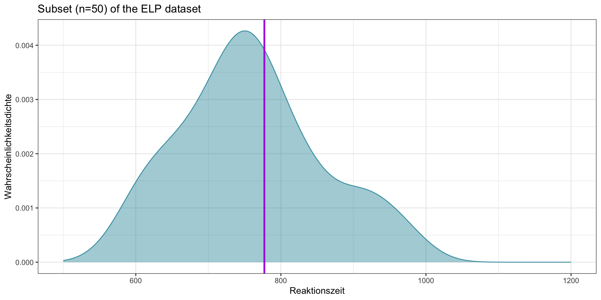
Residuen
Wir müssen unsere Formel also durch den Fehlerterm (e) ergänzen:
\(y = b_{0} + b_{1} * x + e\)
- Das Gleiche mit einer Prädiktorvariable \(y = b_{0} + b_{1} * x + e\)
- Auf jedem Abschnitt der Linie (kann man sich vorstellen als Mittelwert von Reaktionszeit abhängig von einer spezifischen Worthäufigkeit) gibt es Streuung

Evaluieren der Modellanpassung
- Anhand der Residuen können wir berechnen, wie gut das Modell auf die Werte angepasst ist (goodness of fit)
- Summe der Abweichungsquadrate (sum of squared errors (SSE)): \(SSE = \sum_{i=1}^{n}(y_{i}-f(x_{i}))^2\)
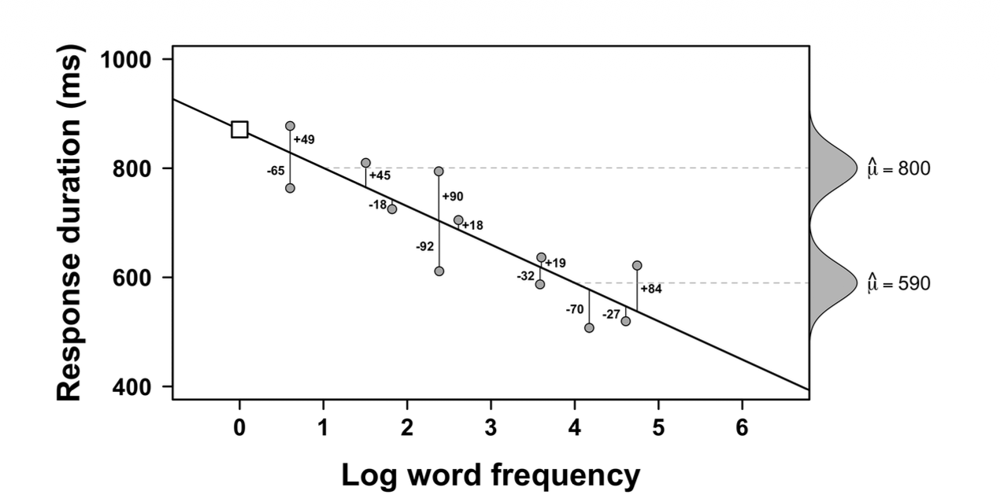
Residuendarstellung von Winter (2020) (S. 73)
Evaluieren der Modellanpassung
- Anhand der Residuen können wir berechnen, wie gut das Modell auf die Werte angepasst ist (goodness of fit)
- Summe der Abweichungsquadrate (sum of squared errors (SSE)): \(SSE = \sum_{i=1}^{n}(y_{i}-f(x_{i}))^2\)
- Der SSE alleine ist noch nicht wirklich hilfreich.
- Oftmals vergleichen wir den SSE des Modells mit einem anderen Modell
- z.B. dem leeren Modell (intercept-only model), also \(y = b_{0}\)
- das gibt uns das Bestimmtheitsmaß (\(R^2\))
- \(R^2 = 1 - \frac{SSE_{model}}{SSE_{null}}\)
Evaluieren der Modellanpassung
\(R^2 = 1 - \frac{SSE_{model}}{SSE_{null}}\)
Nun rechnen wir den \(R^2\) aus:
[1] 0.1785697- Der \(R^2\) zeigt wie viel Varianz in den Daten durch das Modell erfasst wird.
- Hier sind 29.4% durch das Einfügen des Prädiktors Worthäufigkeit der Varianz erfasst, 70,6 % bleiben unerfasst.
- Der \(R^2\) ist des Weiteren ein Maß für die Effektgröße (effect size)
- Die Effektgröße misst wie stark zwei Variablen voneinander abhängen
- Wir werden noch weitere Effektgrößen im Verlauf des Kurses kennenlernen
Modellanpassung
Wie kriegen wir eigentlich die Koeffizienten \(b_{0}\) und \(b_{1}\)?
- → Minimisieren der quadrierten Residuen
- \((y_{i}-f(x_{i}))^2\), den Unterschied zwischen den vorhergesagten/angepassten Werten und den beobachteten Werten, also den Datenpunkten
- wird im Hintergrund durch die Funktion lm() ausgeführt
- Der Vorgang wird deshalb auch least squares regression genannt
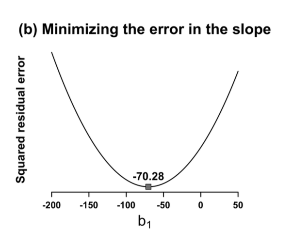
Modelloutput
Std. Error,t valueundPr(>|t|)nach den Weihnachtsferien (inferentielle Statistik): ist Worthäufigkeit “signifikant”?
Lernziele
- die Koeffizienten, \(y\)-Achsenabschnitt (intercept) und Steigung (slope), einer Linearen Regression kennen und wissen, was sie bedeuten
- wissen, wie man anhand eines angepassten Regressionsmodell, Voraussagen über neue Werte machen kann
- wissen, was Residuen (resdiuals) sind und wie man sie berechnet
- wissen, wie man anhand der Residuen die Summe der Abweichungsquadrate (sum of squared errors (SSE)) berechnet
- das Bestimmtheitsmaß (\(R^2\)) kennen, wissen wie es berechnet wird und was es bedeutet
Nächstes Mal
- Arbeitsblatt 4
- Multiple Lineare Regression (und Interaktionen)
- Projektarbeit